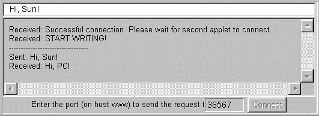
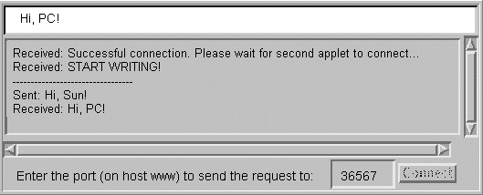

Feedback Form
|
|
Start of Tutorial > Start of Trail > Start of Lesson |
Search
Feedback Form |
As the Security Restrictions section explains, applets are subject to many security restrictions. For example, they can't perform file I/O, they can't make network connections except to their original host, and they can't start programs.One way of working around these restrictions is to use a server application that executes on the applet's host. The server won't be able to get around every applet restriction, but it can make more things possible. For example, a server probably can't save files on the host the applet's running on, but it'll be able to save files on the host the applet originated from.
This page features an example of a server that allows two applets to communicate with each other. The applets don't have to be running on the same page, in the same browser, or on the same computer. As long as the applets originate from the same computer, they can communicate through the server that's running on that originating computer. The example uses sockets, which are documented in All About Sockets
.
Here are the source files:
TalkClientApplet.java
- The source file for the client applets. (Both applets are instances of the same class; here's the
1.0 version<APPLET CODE=TalkClientApplet.class WIDTH=550 HEIGHT=200> </applet>Here's a link to a page that includes the above HTML code. After saving this page to a file on your local HTTP server, you can use it to communicate with the talk server
TalkServer.javaTalkServerThread.java- The source files for the server. (1.0 versions of these files are in
example/TalkServer.javaexample/TalkServerThread.javaTalkServerclass.The instructions for running the server are just like those for the previous example. Run the server on the applets' originating host, recording the port number the applets should rendezvous on. then initialize both applets (which can be running on different machines) to talk to the server port number. After this initialization is complete, type into each applet and press the Return key to send the message to the other applet.
Here's the server in action:
Here are pictures of the applets in action:www% java TalkServer
TalkServer listening on rendezvous port: 36567
This figure has been reduced to fit on the page.
Click the image to view it at its natural size.
This figure has been reduced to fit on the page.
Click the image to view it at its natural size.
|
|
Start of Tutorial > Start of Trail > Start of Lesson |
Search
Feedback Form |